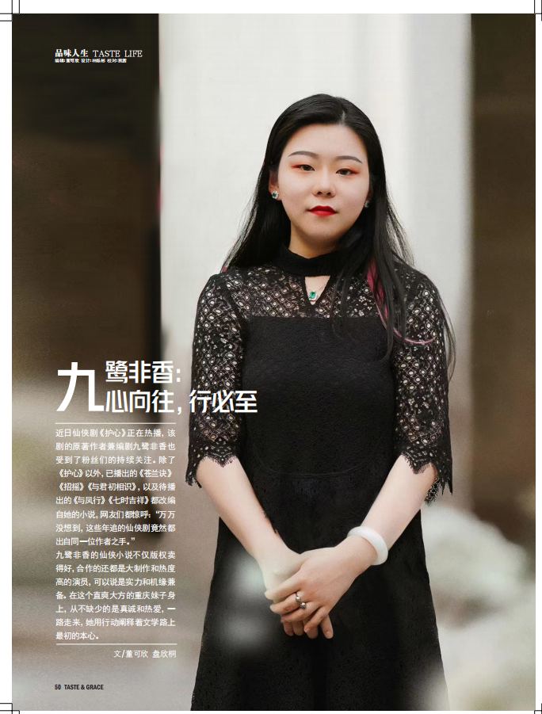

点开周刊可翻阅实习时的版面；点开每篇文字可展开全文阅读。
周刊版面 ✦ 娱乐周刊实习版面

《娱乐周刊》实习版面 · 翻书阅读
9 个版面 · 点击进入翻阅，模拟纸质周刊质感
进入翻阅 →
文案作品 ✦ Copywriting
《暖阳万物藏》· 李昀锐专版
Copywriting ✦ 娱乐封面▶
暖阳万物藏 / 暖自心生，境随心转
深秋迟暮，新冬可期。季节轮换，总有新的故事值得期待，属于李昀锐的冬日序曲也如期而至。
雪花是冬天的来信，向人们宣告着冬季的到来。但是对李昀锐来说，比起感知到冬日第一片雪花，皮肤变得敏感才是提醒他"秋冬换季"最准时的闹钟。冬天拍戏时，李昀锐总会带上一个暖手袋御寒，对他这样体脂比较低的人来说，冬天实在不太友好，他总是更加偏爱凉爽的秋天。
人间最浪漫之一，是伴雪食三餐。李昀锐的家乡是"千湖之省"——湖北，有着立冬时节吃萝卜的习俗，"冬吃萝卜夏吃姜"，每到秋冬之时，家家户户餐桌上总少不了萝卜。关于初冬，李昀锐最深刻的记忆就是一家人聚在一起吃火锅，既暖胃又能够跟家人团聚，"家人闲坐，灯火可亲"，幸福将寡淡无味的初冬煮成了茗香四溢，恰似冬日暖阳，好日常在。
每到冬季，李昀锐总是喜欢到滑雪场滑雪，"虽然技术没有很好，但很享受这种自由痛快的感觉。"正是这些炙热的瞬间，让漫长的冬也发光发热。与热爱滑雪时所带来的瞬间的感觉一样，相比于特意计划的打卡，李昀锐更加喜欢即刻分享，记录当下的心情，忠实于此时此地，承认心风的方向，顺风而行。
松弛不靠营造，从容流于自然。在社交平台上，李昀锐常常分享出不同风格的造型，在提到自己特别青睐的穿搭风格时，他选择了舒服又自在的运动休闲风，正如他给人的感觉，自如舒展，坦率柔和。
季节交替，新的故事和感悟汩汩流动，生生不息。李昀锐始终步履不停，在岁月中跋涉，在点滴时光中寻觅无限美好，在冬日里也能遇见慷慨的晴朗。
《沉浸式种地？谁的 DNA 又动了！》
Copywriting ✦ 深度解读▶
沉浸式种地？谁的 DNA 又动了！
最近，一档主打劳作耕种的纪实性慢综艺《种地吧》在不知不觉间走红网络，豆瓣评分高达 8.5，这部固定班底成员只有 10 个"小糊豆"的"小破综"成为了无数年轻人闲暇之余的新晋"电子榨菜"。
从《向往的生活》《种地吧》等主打田园治愈的综艺，到《去有风的地方》《卿卿日常》等剧集，亲近乡村生活的创作风从综艺刮到影视剧，在大众文化审美需求多元化的当下，田园剧综构成影视市场一股不可忽视的力量。那么，在众多强设定、快节奏的"爽"剧中，田园牧歌式的剧综究竟为什么能够脱颖而出，大受欢迎？
在社会工业化进程中，乡村发展因附着于传统农业的形态，相对于城市文化来说，在很长一段时间里是相对缓滞的。也正因如此，它的质朴、原生态与慢节奏，令城市中的"打工人"心向往之。在中国社会科学院新闻与传播研究所世界传媒研究中心秘书长、研究员冷淞看来，"当下社会生活节奏快、压力大，工作、房贷、父母催婚等压力挑战着年轻人敏感的神经，他们亟需寻求解压和放松。"田园剧综的出现，正是抓住了当下观众对于慢生活的向往，为观众提供了脱离职场、回归家庭、享受生活的场域。
已更新完结六季的老牌综艺《向往的生活》便是将乡土生活诗意化的典型。在这里，三五好友难得相聚，聊天做饭唠家常，从北京密云、湖南湘西、云南西双版纳到海南省海尾……不同的地域风貌与相似的家庭温情，共同作用让这部慢生活综艺为观众打造出了一个个理想的"乡村乌托邦"。
《去有风的地方》则精准捕捉到了当下的年轻人对生活方式的反思，以及后疫情时代人们的精神需求。《卿卿日常》的叙事风格也是轻松自然的慢节奏。在《卿卿日常》的豆瓣短评中，一位网友点评道："男女主真就是在过日子，每天一起吃饭喂狗，非常贴合片中的日常两个字，一日两人三餐四季 + 生活中的趣事，有种看慢综艺的感觉。"在影视剧普遍追求快节奏的当下，《卿卿日常》清新的差异化风格使人眼前一亮。剧中虽然也涉及到了权谋，但最核心的剧情还是围绕生活中的趣味琐事铺陈展开，各个角色与爱人、家人、友人的日常是主体，以"一日三餐"为出发点，在点滴相处之中随之进展。这种与我们的日常生活节奏相近的叙事节奏和接地气鸟语花香的"有风小院"、绿草如茵的马场、古朴自然的古树古屋……该剧从视觉画面到内核故事，从远离喧嚣的原生态大自然，到古色古香的文化建筑，都用一种娓娓道来的方式向观众展现了"云苗村"这个治愈系的世外桃源。"有风小院"成为了远离都市的"乌托邦"。每一个"都市打工人"都能在这里停下脚步，修缮自我，找到重新出发的力量，完美贴合了后疫情时代下人们渴望远离都市，走近自然的心愿。
《杏仁豆腐，解苦以甜》
Copywriting ✦ 文化广角▶
杏仁豆腐，解苦以甜
杏仁豆腐是易碎的，不容易保存的，刚吃起来的时候还是苦涩的，吃到最后却是甜的，到了胃里是柔和的。就和人生一样，苦涩和甜蜜总是相伴随。
将爱情故事里的五味杂陈娓娓道来，用温暖治愈微苦的人生，话剧《杏仁豆腐心》已于 11 月 24 日登陆上海，开展限时驻演。"杏仁豆腐"尝起来究竟是什么滋味？欢迎走进剧场，细细品赏。
"丧"中取暖，全新演绎
很多观众熟悉导演饶晓志是从他一部部饱含辛辣嘲讽、黑色幽默风格的电影开始，例如《你好，疯子！》《无名之辈》等等。实际上，早在开启银幕之旅前，他就已经是话剧舞台上的知名导演。而这次由他执导，由晓年青剧团出品制作的温暖话剧《杏仁豆腐心》，关注小人物的内心与创伤，是一部精致的日式温暖治愈系话剧。
故事讲述了圣诞节前夜，小夜子和达郎两个即将分开的恋人最后一次依偎谈心，随着回忆的铺陈，彼此深藏心底的秘密被一一剥开，是分别还是释怀，在大幕落下之前，谁都不知道答案……简约的故事、简约的场景、简简单单的两个人，却能给每一个观众带来回味无穷的不同感受，这大概就是这部剧经久不衰的魅力所在。
作为日本岸田戏剧奖获得者郑义信的代表作，该剧自 2000 年在日本名古屋首演后，就受到了诸多戏剧爱好者的追捧和好评。而今天，这部口碑佳作重回舞台，以全新的视角解锁这盘佳肴的另一番滋味，不论是在故事铺陈、人物呈现还在剧本台词等方面，都进行了很多巧妙的设计和处理。虽然原版剧本的场景设定在日本，但为了让大家更好地融入情节与主角共情，减少文化和时代差异造成的"违和感"，在版本翻译上进行了相应的处理，也能让观众更有代入感。对饶晓志来说，这部剧是一部全新的作品，聚焦爱情、亲情、世代等命题，以全新的舞台表达方式来呈现，不变的是，它就如同杏仁豆腐，甜蜜与苦涩相伴相随，在寒冬里一丝温暖的回甘。
《汕头大学召开统一战线情况通报会》
Copywriting ✦ 新闻稿▶
汕头大学召开统一战线情况通报会
3 月 12 日下午，汕头大学召开统一战线情况通报会，向学校各民主党派、统战团体代表通报学校有关工作规划及部署情况，听取有关建议和意见。
校领导唐锐、郝志峰、冯兴雷、陈敏、刘文华、胡忠，学校各民主党派、统战团体负责人，人大政协、无党派人士代表以及统一战线工作领导小组成员参加了会议。会议由校党委副书记周镇松主持。
会议传达了全国两会精神。校党委常委、宣传部部长杜式敏通报 2024 年度学校统一战线工作情况。
校党委副书记、校长郝志峰向与会代表通报学校有关规划及部署情况，提出实施"思政引领铸魂强基计划""卓越学科创新登峰工程""师资素养卓越赋能工程"、五育并举实效提升行动、创新驱动科技引领行动、治理体系效能革新行动、校地融合深耕发展计划及探索国际交流合作新模式等工作部署。
与会党外代表人士对学校改革发展的工作成果和建设思路、学校党委对统一战线工作的重视以及鼓励民主党派建言献策的做法表示高度肯定。他们表示，未来将继续坚定不移地全力支持学校的各项发展建设工作，与学校党委携手共进，推进汕大实现高质量发展。
民革汕大支部主委陈健、民盟汕大总支主委佟庆笑、九三学社汕大基层委员会原主委程西云、政协委员王延宁向学校党委介绍了过去一年的工作情况。与会代表围绕校区建设、学科建设、教学科研、人才引进、后勤安全保障等方面，联系自身工作实际，为学校发展建言献策。针对代表们提出的意见与建议，与会校领导高度重视并给予回应，要求各级单位认真调研、及时解决，现场互动交流热烈。
校党委书记唐锐回顾了学校过去一年在高水平大学建设中的成果，对统一战线成员为学校及地方发展作出的贡献予以充分肯定。唐锐强调，高校党外知识分子应当切实提高政治站位，坚定使命、牢记初心，凝聚思想共识；充分认识新一轮综合改革的紧迫性与重要性，立足当下、奋发作为，强化自身建设；同时充分发挥"人才库""智囊团"作用和专业优势，积极履职建功、建言献策，不断服务发展大局，与学校共同推动"冲一流"目标实现，为建设教育强国、助力中国式现代化贡献力量。
文字：盘欣桐
《反向生活》策划 · 导语
Copywriting ✦ 策划专题▶
转向亦是宇宙 / 把生活还给生活 / 奔向另一片桃源
导语：前路不止有一个方向，生活不止有一种选择，城市并非"宇宙的尽头"，追逐群星固然美好，但有时也许有人更愿意低下头来寻觅属于自己的芳草，找寻生活的本真与平衡。
随着"大城市化"的持续推进，升学、就业、结婚、晋升、加薪等，各种机会挤压和社会竞争所形成的高度"内卷化"，深刻地改变了大家的日常生活心态。作为更容易接受新鲜事物且更具行动能力的群体，面对这样的状况，不少年轻人率先拥抱了新的变化，做出了生活方式上的转向——"反向生活"。
什么是反向生活？其实就是指走上与传统生活相反方向的道路，例如反向考研、反向考公、反向就业、反向旅游、反向过年等。面对社会"内卷化"，面对稀缺资源的"超载竞争"，希望避免深陷旋涡的青年人毅然决然选择了"反向"的生活方式，这逐渐成为去内卷化的一种青年生活新共识。他们选择从大城市转向到中小城市考公务员和就业；从高层级的大学转向到低层级的大学考研进修；从热门、拥挤的网红打卡点转向到相对小众的城镇进行旅游休闲；在春节期间不再回归故乡的小城小村过年，而是选择将父母从老家接到自己所在的大城市欢度春节以及一系列与传统生活习惯大相径庭的行为方式。
年轻人做出"反向"的生活选择，一方面是源自于激烈的社会竞争下做出的无奈退让；另一方面，也是他们挣脱传统评价标准的束缚，理性权衡，在新的赛道上实现自己人生价值的理性选择。
在"反向生活"的视野里，他们不再一味地"朝上看"，不再以大城市作为"宇宙的尽头"，不再把自己裹挟进都市"内卷浪潮"而难以自拔的生活状态，而是选择了回头看，另寻他法，从大都市的生活陷阱中抽身而出，奔向故乡或小城市，奔向万千世界中属于自己的另一片桃源。
随笔 · 记录 ✦ Essays
《摘下耳机是新世纪的脱帽礼》
Essay ✦ 随笔▶
"摘下耳机是新世纪的脱帽礼。"对于没有耳机活不下去的我来说，这句话简直不要太有共鸣，对我来说，耳机里的快乐是最低成本的快乐，音乐带给我的愉悦感确实拯救了我日常生活中很多"好像完了"的时刻。
"手机里最不能删的app一定是网易云，真是我的精神食粮，每天诸事不顺的话，给自己一首歌或者几首歌的机会活过来，亲身体验的最有效的起死回生的方法，戴上耳机就仅仅只是音乐和心的交流，隔绝这个世界，浑身舒畅。"2020年记录在微博的一段，当时我还在上高中，学校里不允许使用手机，所以我在淘宝上花几十块钱买了一个不知名牌子的mp3藏在枕头下面，熄灯时间一过，我就会从枕头下把它摸出来，然后熟门熟路地打开听半个小时的歌，实际上我的初衷是想在睡前听几首安静的歌后优雅地睡下，满足一点文艺女青年的情调，当然这个前提是我没有把rap和摇滚也加进去。
上了大学以后，耳机是我每天的必需品，"没带耳机去上课"对我来说是一件能够影响心情的事情，每天洗澡的时候，都进浴室开好水了才发现原来耳机还戴着，总之，耳机已经成为我生活中地位仅次于手机的物品。
戴上和取下耳机，在现代人的生活习惯里，逐渐变成了社交开关，只要你戴上耳机，别人就会默认你处于"需要一个人"的状态中，以此能够规避掉很多并不想社交的时刻。
无论如何，当你耳朵里充满音乐的时候，身边一切都被隔绝了，好像找到了一种方式偷偷地快乐，旁边已经熟睡的室友，外面拿着手电筒在巡查的宿管阿姨，在世界都沉睡的时刻，我的耳朵里却还在开演唱会。
因为mp3只能靠耳朵听，所以以前用手机听音乐时不会第一时间注意到的歌词好像都被放大了，就像《克林》，在我已经把它收藏进手机歌单近一个月后，就快对这首歌结束我的上头期时，我才第一次在mp3里听清楚了原来这首歌是写给"克林"这个人的，有一种在终点站前一站才发现坐公交坐反了方向的感觉。
一直说音乐有鄙视链，毕竟在"大众就是原罪"的世界里，小众好像就代表了独特的音乐品味，仿佛只要听的歌够小众，就代表一个人听歌特别有品味，但是后来我觉得，一首歌本身的意义不是最重要的，最重要的是人赋予它的意义。前几天朋友说把情感诉诸于文字是"感性得以有痕迹地散发"，我突然觉得听音乐也是这样，总有一段时间我会特别喜欢听一首歌，在这个过程中不自觉地把我的回忆和感情寄存在这三五分钟里，当许久没听再重新播放时，就好像打开了一个尘封已久的寄存柜，它会把你的故事再重新讲给你听。就像我在写下这些的时候，耳机里还在唱克林。
到现在为止对我来说意义最大的歌是HeyKong（必须是live版，钢琴的伴奏让这首歌听起来很"周杰伦"）刚上高中军训睡宿舍的第一晚，学校那会还没有安装空调，三十多度的天躺在床上煎熬得我下一秒就想弹射回家，手机只剩下百分之十的电，这让我只能选择听音乐，打开网易云发现因为手机流量已经用完，只有几首之前播放过有缓存的歌可以听，于是在这样连环的巧合下，那天晚上，我把heykong翻来覆去地听了几十遍，有点像我考试前临时抱佛脚拿着知识点反复朗读，区别是考试前看的知识点我一个也记不住，而heykong的歌词到现在还牢牢地刻在我的脑子里。所以到现在这首歌对我来说还是很特别，而且歌词尤其地契合，每次听就好像回到了我珍贵的高中时期。
《时间过得飞快》
Essay ✦ 随笔▶
时间过得飞快
从六月份高中生活的结束
到现在已经过了五个月
每个人的生活都在逐渐步入正轨
那么大一的你
还会想念高三吗
适应新生活
踏出舒适圈
找到新的朋友
对于刚踏入大学校园的我来说
这些都不是容易的事
有些时候免不了会给我带来挫败感和失落感
同样
在大学的校园里
我也会被很多平淡的小事触动
被大家照顾得白白胖胖的小流浪猫
份量给得超多的猪脚饭
有趣又积极的小组组员
拿快递的路上总是可以碰见的晚霞
美好的事情总能勾起我的回忆
我想
无论在哪个城市 哪个时间
你也一定和我一样
有过这样的瞬间
想回到过去
想念那些纯粹又快乐的日子
想念每一个吃饭上厕所都要约着一起的好朋友
想念每一次和同桌分享过的朝阳和落日
想念一起偷偷用多媒体看视频的每个课间
想念一群一起欢笑一起流泪的同学
大家常常说
高三只适合回忆
不适合回去
饭堂窗口前歪歪扭扭的队
每天做不完的卷子
怎么也没法突破的成绩
每天两点一线的生活
好像都不尽人意
但好像
我们总能在平淡无趣的生活中找到乐趣
课上老师放了好几个视频
食堂打到了爱吃的菜
今天踢毽子又进步了
跑回宿舍抢到了第一个洗澡
明天的自习课又多了一节
不管在哪里
不管是高中还是大学
满盈盈的爱意
会拯救每个患得患失的瞬间
暂时淹没掉失落感和挫败感
《感知力 表达》
Record ✦ 记录▶
12.1
最近在群聊里看朋友们聊起疫情对我们的影响
疫情到底给我们的生活带来了什么？
仿佛看不到头的封控
不得不一延再延的各种活动
抑或是每天只是
起床 做核酸 上网课 睡觉 再起床
循环往复
除了生活上的受限制和极大的不自由
下降的还有我对生活的感知力
在上爱情美学的课时发现
老师总是对生活中所有的事物具有强烈的感知力
或是花 或是草 一场日落 一首诗 一段文字
甚至是从本校区到东校区之间一段一小时的车程
她总能从中获得一些特别的美学体验
就是在那些瞬间 我才恍然惊醒
什么时候我好像慢慢地丧失了一部分感知力
开始变得有些麻木
与其说是感知力
不如说是感知美的能力
失去了许多生活中的热情
我不再习惯去观察生活
也无法对周遭的人和事物产生强烈的感受
记得我在微博发过一句话
"无止境的输出来自于不断的思考"
感受力的下降给我带来的是思维的停摆
然后就是输出的减少
意识到这件事使我很挫败
我不想要这样 所以我决定改变
我开始给自己找点事情做
这也是我最近写推文的原因
表达实在是一件很有魅力的事情
无论你的文字是不是足够精美
是不是足够有哲思
但是这个世界上总会有人在看到之后和你有一样的感觉
就算我今天只是说一句
我好饿好想吃东西
也会因为有人在下面说我也是而感到奇妙的安慰
所以 表达不是错 表达没有门槛
矫情话很多也没有关系 尽管说你想说的
因为这个世界上总会有人和你情感共振
12.10
我们学校终于解封了
可以自由出入
有一种大学生活才刚刚开始的感觉
本来和佳宜约好了第二天早上去看日出
但是她熬太晚了
于是早上我为了不浪费掉好不容易的一次早起
还是下楼去了
一个人在楼下游荡
发现今天是多云
看不见日出
想出门去海边走走
但是要从南大门出去太远
瞬间打消了我出门的欲望
虽然有点遗憾
但是我还是拍下了这样一张照片
想留住点什么
虽然没有看见日出
但是就像佳宜说的
"海会一直在"
来日方长
总还会有机会的
今晚和朋友聊天的时候聊到最近的阅读
发现自己的感知力真的弱了很多
敏感度完全下降
以前对喜欢的句子
看到的一瞬间会有一激灵的共通感
但是现在看书 面对写得很好的句子
心里还是一潭死水
我感觉我没有办法共情了
突然觉得自己很贫瘠
这真的是一件相当可怕的事情
所以决定在把所有论文都赶完之后好好地调整自己
今晚时隔好久又突然间想起来高木直子的漫画书
真的很喜欢她的漫画书
还记得以前最喜欢的就是她画自己一个人跑到各种地方泡温泉和吃美食的特辑
那时候还会感叹原来日本有这么多有名的温泉
还有感觉每一样吃的都很好吃的样子
莫名其妙就会很治愈
我想了想
也许是因为喜欢那种好像不用考虑什么
只是沉浸在好吃的食物和令人幸福的温泉的感觉
在描述这种感觉的时候
又想起和朋友们一起去旅游
到今天还在想